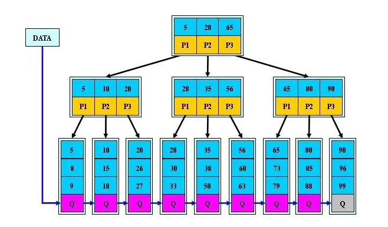
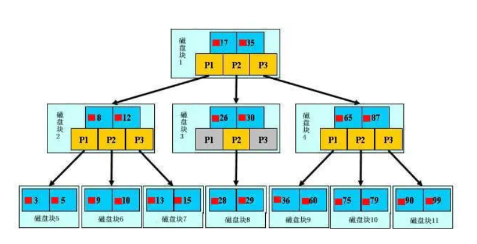

MySQL中用的是B+树吗？NONONO! MySQL中使用的是B+索引树，他和B+树有相似之处，但也有些许不同。
B+树索引介绍

众所周知，一颗传统的M阶B+树需要满足以下几个要求：
- 从根节点到叶节点的所有路径都具有相同的长度
- 所有数据信息都存储在叶子节点，非叶子节点仅作为叶节点的索引存在
- 根节点至少拥有两个子树
- 每个树节点最多拥有M个子树
- 每个树节点(除了根节点)拥有至少M/2个子树
B+树是为了磁盘及其他存储辅助设备而设计的一种平衡查找树(不是二叉树)，在B+树中，所有记录的节点按大小顺序存放在同一层的叶节点中，各叶子节点用指针进行连接,而B+树索引本质上就是B+树在数据库中的实现，与纯粹的B+树数据结构还是有点区别。
B+树与B+树索引的区别如下：
| B+树 | B+树索引 | |
|---|---|---|
| 存储位置 | 内存 | 磁盘 |
| 扇出率 | 低 | 高 |
| 并发控制 | 可以不考虑 | 需考虑 |
| 分裂方向 | 不需要考虑 | 向左、向右 |
通常来说，B+树索引用于基于磁盘的数据库系统，即数据最后持久化存放在磁盘上，每个页的叶子节点一般包含较多的记录，因此具有较高的扇出。这意味着在数据库中B+树索引高度一般较小，在2~3层，其高度也决定了磁盘I/O搜索的次数
还有一点需要注意的是，实际上根据B+树索引并不能找到一个给定值的具体行，B+树索引能找到的只是查找数据行所在的页。然后数据库通过把数据页读入内存，再在内存中进行查找，最后得到查找的数据。
为什么说B+树比B树更适合数据库索引？
B+树是上世纪70年代针对硬盘和单核处理器设计的，为了减少机械硬盘的寻道次数，它采用了多叉树结构，降低了索引结构的深度，IO读写次数减少。
熟悉数据结构的同学都知道，B树也是多叉树结构，一种自平衡的树，而且B+树是从B树演化而来的，那么为什么不使用B+树的前身B树呢？一些资料也表明B树也适用于读写相对大的数据块的存储系统，例如磁盘。下面来看下用B树做索引的结构：

上图小红方块表示文件内容在硬盘中的存储位置。B树相比B+树的一个主要区别就在于B树的分支节点上存储着数据，而B+树的分支节点只是叶子节点的索引而已。
从上面比较B+树和B树的结构，可以得出为什么使用B+树做索引的一些原因(其实网上写B+树索引谈到的大都是以下这些原因)：
1. B+树的磁盘读取代价低
B+-tree的内部节点并没有指向关键字具体信息的指针，换句话说，即分支节点没有存储数据，因此其内部节点相对B 树更小。如果把所有同一内部节点的关键字存放在同一盘块中，那么盘块所能容纳的关键字数量也越多。一次性读内存中的需要查找的关键字也就越多。相对来说IO读写次数也就降低了。
2. B+树的查询效率更加稳定
在B+树中，由于分支节点并不是最终指向文件内容的节点，分支节点只是叶子节点的索引，所以对于任意关键字的查找都必须从根节点走到分支节点，所有关键字查询路径长度相同，每个数据查询效率相当。而对于B树而言，其分支节点上也保存有数据，对于每一个数据的查询所走的路径长度是不一样的，效率也不一样。
3. B+树便于执行扫库操作
由于B+树的数据都存储在叶子节点上，分支节点均为索引，方便扫库，只需扫一遍叶子即可。但是B树在分支节点上都保存着数据，要找到具体的顺序数据，需要执行一次中序遍历来查找。所以B+树更加适合范围查询的情况，在解决磁盘IO性能的同时解决了B树元素遍历效率低下的问题
小结
再次总结下B+树索引，它采用了多叉树的结构，降低了索引结构的深度，避免了传统二叉树结构中绝大部分的随机访问操作，有效减少了磁盘磁头的寻道次数。B+树索引查询效率稳定，也有利于进行范围查询。